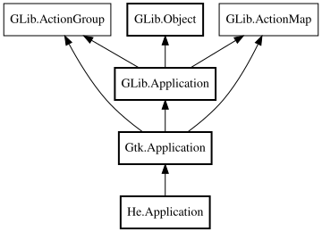

He.Application – libhelium Reference Manual
Packages
libhelium
He
Application
Application
Application
Object Hierarchy:

Description:
public
class
Application
:
Application
Namespace:
He
Package:
libhelium
Content:
Creation methods:
public
Application
()
Inherited Members:
All known members inherited from class Gtk.Application
active_window
add_window
get_accels_for_action
get_actions_for_accel
get_active_window
get_menu_by_id
get_menubar
get_window_by_id
get_windows
inhibit
list_action_descriptions
menubar
query_end
register_session
remove_window
screensaver_active
set_accels_for_action
set_menubar
uninhibit
window_added
window_removed
All known members inherited from class GLib.Application
action_group
activate
add_main_option
add_main_option_entries
add_option_group
add_platform_data
after_emit
application_id
before_emit
bind_busy_property
command_line
dbus_register
dbus_unregister
flags
get_application_id
get_dbus_connection
get_dbus_object_path
get_default
get_flags
get_inactivity_timeout
get_is_busy
get_is_registered
get_is_remote
get_resource_base_path
handle_local_options
hold
id_is_valid
inactivity_timeout
is_busy
is_registered
is_remote
local_command_line
mark_busy
name_lost
open
quit
quit_mainloop
register
release
resource_base_path
run
run_mainloop
send_notification
set_action_group
set_application_id
set_default
set_flags
set_inactivity_timeout
set_option_context_description
set_option_context_parameter_string
set_option_context_summary
set_resource_base_path
shutdown
startup
unbind_busy_property
unmark_busy
withdraw_notification
All known members inherited from class GLib.Object
@get
@new
@ref
@set
add_toggle_ref
add_weak_pointer
bind_property
connect
constructed
disconnect
dispose
dup_data
dup_qdata
force_floating
freeze_notify
get_class
get_data
get_property
get_qdata
get_type
getv
interface_find_property
interface_install_property
interface_list_properties
is_floating
new_valist
new_with_properties
newv
notify
notify_property
ref_count
ref_sink
remove_toggle_ref
remove_weak_pointer
replace_data
replace_qdata
set_data
set_data_full
set_property
set_qdata
set_qdata_full
set_valist
setv
steal_data
steal_qdata
thaw_notify
unref
watch_closure
weak_ref
weak_unref
All known members inherited from interface GLib.ActionGroup
action_added
action_enabled_changed
action_removed
action_state_changed
activate_action
change_action_state
get_action_enabled
get_action_parameter_type
get_action_state
get_action_state_hint
get_action_state_type
has_action
list_actions
query_action
All known members inherited from interface GLib.ActionMap
add_action
add_action_entries
lookup_action
remove_action